When we analyze data, we usually have to look at lots of them. An example might be income data gained from household surveys. Such a survey will contain a huge number of data points, in the order of magnitude of thousands or even ten thousands of data, depending on the size of the population on which the survey is taken. These data need to be summarized, to understand their main characteristics.
In this unit you will learn the most important tools for summarizing and communicating lots of data. You are going to learn the principles how data summaries are constructed, what are the properties of these summaries and what needs to be carefully considered.
When we need to deal with really large data sets, and most modern data sets are too large to be handled manually, we will need the computer. We already did some first steps in R. In this unit we will build on these first steps but enlarge them in a way that will enable you to deal and manipulate large datasets on the computer.
3.1 Understanding variation in a single variable using histograms
3.1.1 Constructing a Histogram
To summarize data, statisticians often use a graph which is called a histogram. In this section we will discuss all you have to know about histograms and how to use them. Let us start by an example, where we have about 100 data points, which is a lot but not that large that we can not handle them by hand.
The data we want to look at come from measurements of the annual flow of the river Nile at Aswan in Egypt from 1871 to 1970. The units of these measurement in which the annual flow is recorded are 100 millions of cubic meters, i.e. \(10^8 m^3\).
This is one of the data sets that is bundled with the R distribution and is available to all users of R. They are stored in an R object called Nile.1
1 When you type data() at the R console, you get a list of all datasets that are available with the current distribution of R.
This is how the data look like, when we print them to the R console using the R command print(). The R function options() with the argument widthjust controls how the numbers are printed. Here I made sure that they will fit in the width of the page.
We start the construction of a histogram by choosing for the horizontal axes ranges of numerical values - in our case of the river flow data - which are called bins or classes. There is no fixed rule as to how to choose the size of these ranges. These ranges should neither be too fine, nor too coarse. While there are lists of mechanical rules, which you can for example find on Wikipedia2, it is usually best to use your domain knowledge and some experimentation to find out the bin size that works best for your data.
2 See https://en.wikipedia.org/wiki/Histogram#Number_of_bins_and_width
For this example, assume we had chosen a bin size of 1003. When you study the list, you will find that the lowest value is at 456 while the highest value is at 1370. This is already quite tedious to find out by eyeballing the numbers with the small number of values we have chosen for this example. It is impossible to do for really large data sets.
3 Note that this will mean \(100\times 10^8 m^3\) per year.
Now lets make a distribution table like this:
Flow-bin
Frequency
400 - 500
1
500 - 600
0
600 - 700
5
700 - 800
20
800 - 900
25
900 - 1000
19
1000 - 1100
12
1100 - 1200
11
1200 - 1300
6
1300 - 1400
1
In the column Flow-bin we have recorded the bins in steps of 100 and in the right column, Frequency, we have recorded the count of values that are in this bin.
When we make such a tabulation we have to agree on an endpoint convention. This is important, since when a flow value would for instance be measured as exactly 500, in which bin should it be counted: 400-500 or 500-600? You, the constructor of the histogram, has to take this decision. Let us agree on the convention that when a value falls exactly at the endpoint of the bin, we put it in the next bin. In practice you will usually do a histogram by computer. The code of the computer program has to specify an endpoint convention, so the computer knows what to do when a value coincides with an endpoint.
On the Frequency axes you put the frequency scale: Counts of values. Then for each bin, you plot a bar, which has the width of the bin and the height of the frequency.
Do this for all the bins you have tabulated and you are ready.
The histogram provides a certain aggregation of the data because it sorts the 100 data points into 10 bins, in our example. While loosing some local information on individual data points the global information conveyed by the summary gives us a pretty good idea of the overall pattern of variation on the Nile river flow data.
We can see, for instance, that the most frequent flow is between 800 and 900 and that the variation is fairly symmetric around this bin. In the extremes this most frequent value can half or almost double, so there is quite some spread in the data.
Constructing the river flow histogram
If we had just plotted all individual data points, we also got a picture, though you probably agree that it is not particularly useful.
Histograms are such a common tool in statistics to explore the variation in one variable and the shape, how it is roughly distributed that every statistical software has functions to produce histograms. In R, the language we use in this course, there is also such a function. The function name is called hist() and it takes the data as an argument. This is the second graphic function of R you encounter in this course after we played with the barplot()function in the last lecture.
To produce a histogram from the river flow data, we type at the console
hist(Nile)
Now you try
Let us check your understanding of histograms by a little quiz now. The histogram below shows the distribution of the final score in a certain class.
Which block represents the people who scored between 60 and 80?
Ten percent scored between 20 and 40 about what percentage scored between 40 and 60?
About what percentage scored over 60?
Final Score
3.1.2 The relative frequency scale: Absolute versus relative frequency
Sometimes it might be useful, to choose a different scale for the y axes of your histogram. Instead of absolute frequencies (or counts) it might be useful to show relative frequencies, the proportion of occurrences in each bin. The type of scale you choose will depend on what kind of comparisons you want to emphasize about your data.
Let us look at this issue by an example. The numbers we want to look at report primary energy consumption per capita in kwh per person per year for different countries around the world.4 The energy numbers refer to primary energy – the energy input before the transformation to forms of energy for end-use (such as electricity or petrol for transport).
4 A kilowatt-hour, known as Kwh is a way to measure how much energy is used. A kilowatt-hour is the amount of energy used if a 100 watt appliance is kept running for an hour. For instance, if you turned on a 100 watt bulb for one hour you are using a kilowatt-hour of energy. What’s the difference between kilowatt vs. kilowatt-hour? A kilowatt is 1,000 watts, which is a measure of power. A kilowatt-hour is a measure of the amount of energy a certain machine needs to run for one hour. So, if you have a 1,000 watt drill, it takes 1,000 watts (or one kW) to make it work. If you run that drill for one hour, you’ll have used up one kilowatt of energy for that hour, or one kWh. Obviously, every appliance will use a different amount of power. Here are some of the usages for some items in a home: 50″ LED Television: around 0.016 kWh per hour, electric water heater: 380-500 kWh per month
Let us look at the year 2019.
Code
library(JWL)dat <-with(energy_consumption_per_capita, energy_consumption_per_capita[Year ==2019, ])hist_info <-hist(dat$Cons, plot =FALSE) # Store output of hist functionhist_info$counts <- hist_info$counts /# Compute relative frequency valuessum(hist_info$counts) *100plot(hist_info, freq =TRUE, xlab ="Primary energy consumption in kilowatt-hours per person per year.", ylab ="Percent", main ="Primary energy Consuption per Capita 2019") # Plot histogram with percentages
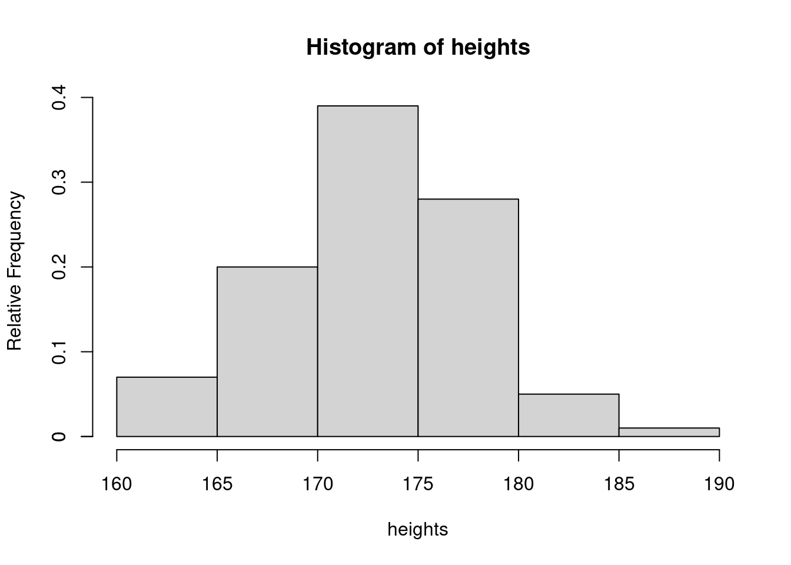
In this histogram you see the distribution of per capita primary energy consumption for the year 2019 for countries around the globe. But now the y axes shows relative frequencies instead of counts.
For example, you see from the graph that roughly 55 % of countries have a primary energy consumption smaller that 20.000 kilowatt hours per person in this year. The next larger bucket contains already roughly half or 24 %. The biggest buckets are then a very small fraction of countries in the world. This means that there is a relatively small share of countries, around 20 %, which have a large primary energy consumption per capita. One says in the language of statistics that the distribution of per capita primary energy consumption is skewed. When you have a histogram with a relative frequency scale the lengths of the bars must sum to 1 (or to 100 depending whether the relative frequency is expressed in decimal fractions or in percentages).
3.1.3 Exercises: Now you try
A histogram of monthly wages for part-time employees is shown below (relative frequencies are marked in parenthesis). Nobody earned more than $1000 a month. The block over the class interval from 200 to 300 is missing. How tall must it be?
2. Three people plot histograms for the weights of subjects in a study, using the relative frequency scale. Only one is right. Which one and why?
Code
#| echo = falselibrary(JWL)dat <- height_weightdata <- dat[dat$state ==1& dat$sex ==1& dat$age >18, ]hist_inf <-hist(data$height, plot =FALSE) # Store output of hist functionhist_inf$density <- hist_inf$counts /# Compute density valuessum(hist_inf$counts) *100png(file="pictures/hight_version1.png")plot(hist_inf, freq =FALSE, xlab =" ", ylab =" ", main =" ")png(file="pictures/hight_version2.png")plot(hist_inf, freq =FALSE, xlab ="hight (cm) ", ylab ="Percent per 5 cm ", main =" ")png(file="pictures/hight_version3.png")plot(hist_inf, freq =FALSE, xlab ="hight (cm) ", ylab ="5 cm per percent", main =" ")
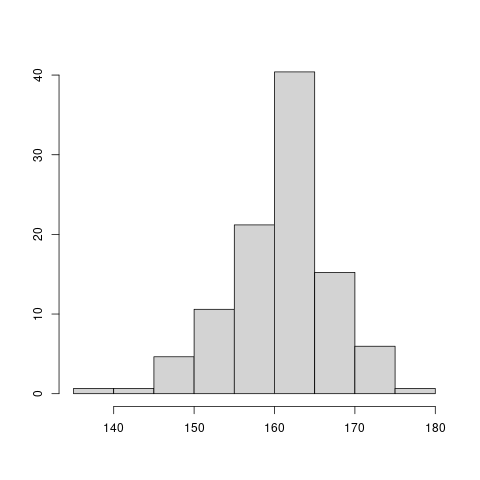
(a) Version 1
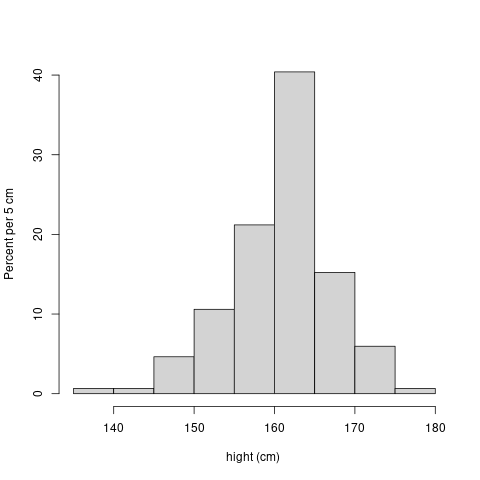
(b) Version 2
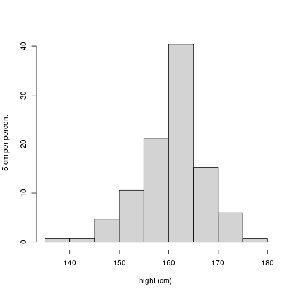
(c) Version 3
Figure 3.1: Three versions of a hight histogram of males over age 18
An investigator draws a histogram for some height data, using the metric system. She is working in centimeters (cm). She wants to draw the histogram in a so called density scale, i.e. in a scale that the area of all the bars sum to 1. The vertical axes shows relative frequency and the top of the vertical axes is 10 percent per cm. Now she wants to convert to millimeter (mm). There are 10 millimeter to the centimeter. On the horizontal axis, she has to change 175 cm to ? mm, 200 cam to ? mm. On the vertical axis she has to change 10 percent per cm to ? percent per mm, and 5 percent per cm to ? percent per mm.
In a Public Health Service study, a histogram was plotted showing the number of cigarettes per day smoked by each subject (male current smokers), as shown in the histogram below. The density is marked in parentheses. The class interval include the right endpoint, not the left.
The percentage who smoked 10 cigarettes or less per day is around:
1.5% 15% 30% 50%
The percentage who smoked more than a pack a day, but not more than 2 packs, is around
1.5% 15 % 30% 50% (There are 20 cigarettes in a pack)
The percentage who smoked more than a pack a day is around
1.5%, 15%, 30%, 50%
The percent who smoked more than 3 packs a day is around
0.25 of 1%, 0.5 of 1%, 10 %
The percent who smoked 15 cigarettes per day is around
0.35 of 1%, 0.5 of 1%, 1.5%, 3.5%, 10%
Figure 3.2: Number of cigarettes
3.1.4 Best practices for histograms
When you summarize lots of data by a histogram there are some things you should consider carefully. Let us go through the most important best practice principles for histograms.
3.1.4.1 Bin size
When doing exploratory data work it is usually a good idea not to look at a single histogram but at several histograms of the same data by changing the bin size. There is no clear rule about the optimal bin size. It often depends on context and field knowledge.
If the bins are to fine, then the data will be be very noisy and give no overview because they show too many individual points. On the other hand if the bins are too wide, they will not show you the overall variability in the data very well and you fail to get a good idea about the distribution.
Let us illustrate this point using the river flow data of the Nile.
In the first case we have chosen 100 bins, which is too fine. There is almost one bar for every single data point. In this way we have a lot of spurious peaks and throughs and can not see the variation pattern in the data very clearly
Here the histogram is too coarse and we do not see the variation pattern either.
The computer usually has a built in rule of thumb for the histogram which will work well in most of the cases. Still for individual datasets it is sometimes better to choose a different bin size that more adequately mirrors the variation in the data.
3.1.4.2 Choose boundaries that can be clearly interpreted
Tick marks and labels should fall on the bin boundaries. As in the examples discussed so far, they need not be there for every tick but it is enough if they are there between every few bars. Bin labels should also have not many significant digits, so they are easy to read. So bin sized which divide 10 and 20 evenly are easier to read than bin sizes that do not. So always take caution not to arbitrarily split bin sizes. Otherwise you can end up with off bin boundaries.
For example, if we just took the maximum and the minimum of the Nile river flow data and arbitrarily divided them into 7 bins, we would get the difficult to read bin boundaries
3.1.4.3 What’s the difference between a histogram and a bar chart?
A histogram depicts the frequency distribution of a continuous, quantitative variable, such as height, weight, time, energy consumption etc. These are variables that can take on any value and these values can be ordered from smallest to highest.
When we have a categorical variable, like we encountered them in section 2, we need to use a bar chart. The bars of the bar chart typically will have a small gap between the bars, emphasizing the discrete nature of the variable. The categories in a bar chart usually have no natural ordering. As we discussed in section 2, we have even to be conscious how we display the categories to avoid suggesting an order that is in fact not there in the data.
3.2 Next steps in R: Reading Data, understanding R objects and selecting and modifying values
Before we go on with learning the tools to summarize and communicate lots of data let us gain more skills for handling the tool that will actually enable you to handle large data sets yourself by making use of R. Building on what we learned in the last unit, lets now push your knowledge of R bit further.
3.2.1 Reading data in R
Before we can do anything with data, we need first to learn how to load data into R and how to save them. We will discuss now how to do this for the case of comma separated text files or so called csv files. R provides functions for reading and writing from almost any other format, like data stored in Excel files and many more data formats that are used today. Since in all those different formats are read by R following the same principles as in the csv case, it is sufficient if we discuss here the the case of csv files only.
We have discussed a data set of per capita primary energy use in countries around the globe to produce a histogram of these data for the year 2019. How did I get these data into R?
First of all I could access these data because helpful people at Oxford University in the UK who maintain and run the website “Our world in data”, which we have encountered before, store these data on their website. In the concrete case of the energy data, they can currently be found at https://ourworldindata.org/grapher/per-capita-energy-use where you can download the datafile from the webpage and save it locally somewhere on your computer.
I have taken a screenshot here
Our World in Data website energy
In the lower right corner you see a box called Data and a download button. This button allows you to download the dataset to your machine. The file is called per-capita-energy-use.csv. From the extension of the file csv, you can see that it is a comma separated text file. This is a plain text file following certain formatting rules. In particular individual data points are separated by a comma5
5 The standard format for csv can be looked up here https://www.ietf.org/rfc/rfc4180.txt. Despite this standardization it can occur that different files use different conventions for the notation of the decimal comma sign. In the most common specification this symbols is a dot (.) and in others it is a comma (,). For such speical cases R provides special functions, which we will explain in the text.
I have stored the file in a sub-folder to the directory in which I am writing these lecture notes. If you decide to download this file, you will save it somewhere on your machine where you find it appropriate. Perhaps you have a folder for this course and in this folder you have a sub-folder where you store all the data sets we are using in the course.
To read a csv file, R provides the function read.csv(). If the csv file comes with a European instead of an US decimal format (, instead of . for the decimal sign.) you need to use the function read.csv2(). Please check out the documentation of these functions by typing ?read.csv at the R prompt.
In the simplest form you read the data and store them in an object you can work with in R. How to store data in an R object, we have already learned in the previous lecture. You invent a name and assign the values to this name using the assignment operator <-.
Let’s call the object in which we save our data energy_consumption, then by calling the function read.csv() with the path to your file as an argument will read the data from your local folder and store them in the object we have created. This allows us to refer to the data for doing further computations.
The function needs as an argument the file name. If the file is in a sub-folder of the current directory you need to also specify the path. To specify the correct path to the file you need to know in which part of your directory tree you are currently working.
In my case I am working in the project folder for my lecture notes, which has a sub-folder called data. The data sub-folder has a further sub-folder called energy_use_per_capita in my case and thus I specify the path relative to this location.
To find out what is your current R working directory, R provides the function getwd(). If I type this in my case, I will get
getwd()
[1] "/home/martinsummer/R/Statistics_JWL"
the path of my project folder for this lecture notes. So if I type the string "data/energy_use_per_capita/per-capita-energy-use.csv" this specifies the path relative to my working directory.
If you read the file on your computer, you need to specify the path appropriately from where you are working in R at the moment to where you have stored the csv file.
Now read.csv() has many additional arguments, which provide you with lots of flexibility. I encourage you to check it out and play with it using the help function and the examples given therein by typing ?read.csv at the prompt.
We have now read the primary energy consumption data and written it to the R-object energy_consumption. Lets inspect the object a bit to see what we’ve got.
I use the function head() with the parameter value n = 10. This will show me the first 10 rows of the data-file. So the value I give to the argument n contros how many rows will be displayed.
options(width =120)head(energy_consumption, n =10)
This gives you an idea what the data look like. There are four variables, called Entity, Code, Year and Primary.energy.consumption.per.capita..kWh.person. The last variable name is very informative but also very long and unpractical. We will learn how to change variable names soon. Because of the long name, I had to use the function options() before heads() to tell R to use a sufficiently wide display. Don’t worry for this detail at the moment.
3.2.2 R objects
The most basic type of R objects are atomic vectors. Objects in R are built from atomic vectors.
The energy consumption data-file we have just loaded is an example of such a more complex structure built from atomic vectors. We have already encountered a few of those in our previous lecture.
3.2.2.1 Atomic vectors
An atomic vector is just a simple vector of data. For example remember when we typed the infant mortality data for eight European countries for 1860 we typed
R has a function, which allows you to check whether an object is an atomic vector or not. This function is called is.vector(). It takes the object name as an argument and returns TRUE if the object is an atomic vector and FALSE if it is not.
For example:
is.vector(mr_1860)
[1] TRUE
does indeed return TRUE.
Each atomic vector stores values in a one-dimensional vector, and each atomic vector can only store one type of data. The length of the atomic vector can be determined by the function length() This function takes an R object, which is an atomic vector, as an argument and returns the number of elements in this vector. Here is the example of the die
length(mr_1860)
[1] 8
which is 8 as it should be. An atomic vector could also have only one element, in which case lenght()would return 1.
3.2.2.2 Data types
Now altogether R has implemented six basic types of atomic vectors:
double
integers
characters
logical
complex
raw
We will not encounter complex and raw data-types in this course, so let us skip those and discuss only the first 4 types, double, integer, character and logical.
If yo u go back to our energy consumption data and look at the first three lines
you will see the different variables in the object energy_consumption. Note that I had to fudge a bit with the display because of the unwieldy and long name of the last variable. We are soon going to fix this.
The variables Entity and Code are both of type character. A character vector stores strings of text, which have to be put between quotation marks "". Strings are the individual elements of a character vector.
Note that a string can be more than just letters. If you type, for instance the number 1 with quotation marks, like "1" R would interpret the value as a string not as a number. Sometimes one can get confused in R because both objects and characters appear as text in R code. Object names are without quotation marks strings always are between quotation marks.
Character is the natural data type for country names - here “Afghanistan” and the international abbreviation “AFG” also called an ISO-country code6
6 ISO is the short name for International Organization for Standardization. International Organization for Standardization came into existence in the year 1946 in London. This organization was formed after a delegation of 65 members from 25 countries, met to discuss the future of International Standardization. In 1947, ISO was officially formed with 67 technical committees consisting of a group of experts focusing on a specific subject. ISO founders decided to give it an acronym ISO, which was based on the Greek word ‘isos’, which means ‘equal’.
The variable Year encodes the year of a particular record or observation. Its type is integer, since years are integer values like 1980 or 2022. If yo want to specify a number explicitly as integer in R you have to type it as, say, 1980L, the number followed without space by a big L.
The variable with the very long name Primary.energy.consumption.per.capita..kWh.person. is of type double. This is the data type in R for encoding numbers that are decimal fractions, like 12.451
Now why should we care for distinguishing integers from doubles? This has to do with the way a computer does computations. Sometimes a difference in precision can have surprising effects.
In your computer 64bits of memory7 are allocated for each double in an R program. While this allows for a very precise representation of numbers not all numbers can be exactly represented with 64-bits. The famous candidates are \(\pi\), which has an infinite sequence of digits and must therefore be rounded by the computer. Usually the rounding error introduced into your computations will go unnoticed but sometimes surprises can occur.
7 A bit is a binary digit, the smallest increment of data on a computer. A bit can hold only one of two values: 0 or 1, corresponding to the electrical values of off or on, respectively. So 64 bits are sequences of 0 or 1 with a length of 64
Take for instance:
sqrt(2)^2-2
[1] 4.440892e-16
Why is that? The square root of 2 can not be expresses precisely because, as already the old Greeks knew, it is not a rational number.8
8 Let me invite you to a short digression into the history of science and the history of ideas. The discovery that \(\sqrt{2}\) can not be rational was a shock discovery to the ancient Greeks. The Greek mathematician Pythagoras and his followers were fascinated by and devoted to whole numbers. They detected the fundamental role played by ratios of whole numbers for musical harmony. For example dividing a vibrating string in two half raises the pitch by an octave, dividing the string in three raises the pitch by one fifths and so on. This discovery gave them the clue that the physical world as a whole might have an underlying mathematical structure governed by whole-number patterns. It was thus quite a shock when they found out that one of their foundational discoveries the Pythagorean theorem logically implied that there were ratios of lengths that were incommensurable, that is, not measurable as integer multiples of the same unit. The ratio between such lengths is therefore not a ratio of whole numbers. This is why the Greeks called these numbers irrational. Some of you will remember from school that the Pythagorean theorem says that in a right angled triangle with lengths \(a\), \(b\) and \(c\), where the sides with length \(a\) and \(b\) from a right angle must fulfill the equation \(a^2 + b^2 = c^2\) or expressed in a picture 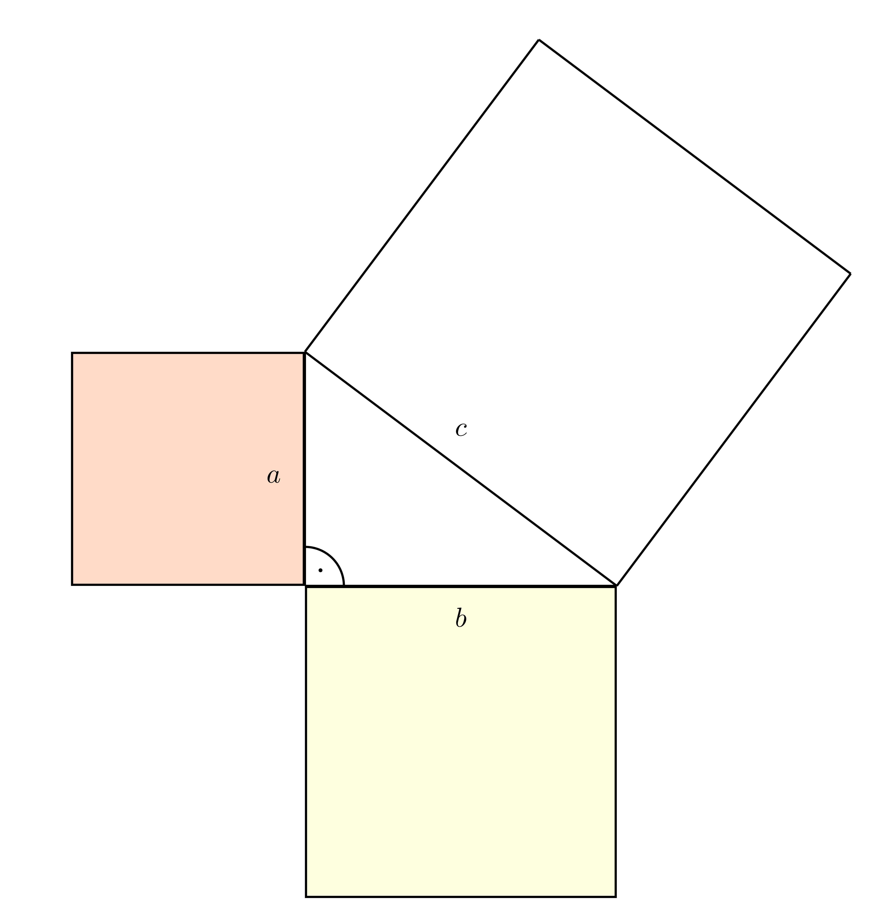 The incommensurable lengths disovered by one member of the pythagorean school was the side and the diagonal of the unit square. By the Pythagorean theorem in a square with side length of 1 it must be the case that \(\text{(lenght of diagonal)}^2 = 1 + 1 = 2\). Thus the length of the diagonal must be \(\sqrt{2}\). 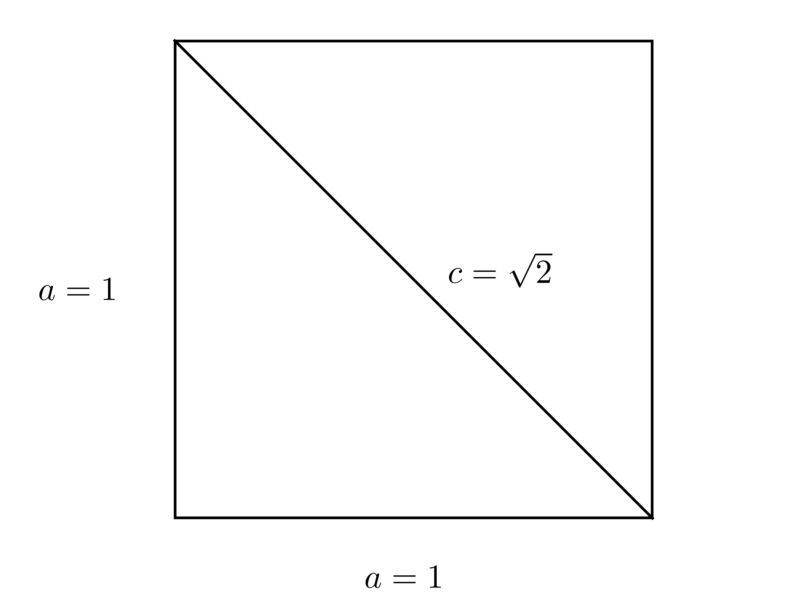 Hence if the diagonal and side are in the ratio \(m/n\) (where \(m\) and \(n\) can be assumed to have no common divisor), we have \[\begin{equation}
m^2/n^2 = 2
\end{equation}\] thus \[\begin{equation}
m^2 = 2 n^2
\end{equation}\] This equation implies that \(m^2\) must be an even number. So \(m\) must be even too, say \(m = 2 p\). But if \[\begin{equation}
m = 2 p
\end{equation}\] then we have \[\begin{equation}
2 n^2 = m^2 = 4 p^2
\end{equation}\] hence \[\begin{equation}
n^2 = 2 p^2
\end{equation}\] which similarly implies that \(n\) is even. But we began the chain of deductions by the assumption that \(m\) and \(n\) have no common divisor. So if both \(m\) and \(n\) were even they would have a common divisor, namely 2. We have arrived at a contradiction. This means the length of the diagonal of the unit square can not be a rational number. Legend has it that th first Pythagorean to make the result public was drowned at sea. But even if the Pythagoreans could not accept that \(\sqrt{2}\) was a number, no one could deny that it was the length of the diagonal of the unit square.
And you have a small rounding error. Let me explain to those of you who are puzzled by the meaning of this output. R displays the result of its computation in scientific notation. 4.440892e-16 means \(4.44089 \times 10^{-16}\).
For those of you who forgot how exponential notation works, let me remind you that we write \(10^{-1}\) for \(1/10\) and \(10^{-2}\) means \(1/10^2\) or \(1/100\). Thus \(10^{-16}\) means \(1/10.000.000.000.000.000\), a very small number but still different from 0. This is the error introduced by rounding \(\sqrt{2}\). Such errors are called floating point errors in computer science lingo and computing with such numbers is called floating-point-arithmetic.
With integers floating point errors are avoided, but for many applications this is not an option. Luckily for most cases floating-point arithmetic provides sufficient precision for most of the applications we encounter in practice.
The last data type in the list, we want to discuss here, are: Logicals. Logical vectors store TRUE and FALSE; logical values. They are extremely useful for doing comparisons and - as we will see shortly - also for selecting values from a data set.
How logical data types work can best be understood by an example. If you type, for instance:
0>1
[1] FALSE
R tells you that this statement is false, by printing the logical value FALSE as an output.
Whenever you type TRUE of FALSE without quotation marks, R will treat the input as logical data. Note, as an aside, if you typed "TRUE"and "FALSE" in quotation marks, R would treat this input as a string co characters, a different data type. When communicating with a computer, you need to be very precise or the machine will not understand what you want to tell it do.
One important R-fact which you need to know about atomic vectors is that atomic vectors can have attributes. Attributes won’t affect the values of an object but can hold and store object metadata.
Normally we do not look at these metadata, but many R functions check for attributes and then do special things with the object depending on these attributes. Attributes can be checked with the function attributes() using an R object as an argument. This will show you all the attributes that are attached to an R object.
The most common attributes for atomic vectors as well as R objects built from atomic vectors are names, dimensions and classes. Each of these attributes has its own helper function that you can use to also assign attributes to the object. For what we need now we discuss names and dimensions and discuss classes, which is a more advanced topic later.
Let us look how this works with the enegrgy_consumptiondata and check whether they have a names attribute:
We can now see the variable names. We can use the function names()also as a helper function to assign other names to our variables. This is a tool that could help us to get rid of the very long and unwieldy name "Primary.energy.consumption.per.capita..kWh.person.". For example:
will overwrite the name attribute by this new vector of names. When you now look for the names attribute, you will see
Code
names(energy_consumption)
[1] "Entity" "Code" "Year" "Cons"
One very important attribute, we will encounter all the time is dimension, with the helper function dim(). For example we can look at our data object energy_consumption again to get:
Code
dim(energy_consumption)
[1] 10215 4
which returns two numbers, which mean that the object has 10215 rows and 4 columns.
3.2.2.4 Factors
R stores categorical data, such as nationality, sex etc. by using aspeical data type called factors. If you take for instance, sex, it can have only two values - male or female - and these values may have their idiosyncratic order, for example that females go always first.
To make a factor in R you have to pass an atomic vector to the factor() function. This function works by recoding the values in the vector as integers and store the results in an integer vector. R also adds a level attribute which contains the set of labels and their order and a class attribute that says the vector is a factor. Example:
sex <-factor(c("m", "f", "f", "m"))typeof(sex)
[1] "integer"
attributes(sex)
$levels
[1] "f" "m"
$class
[1] "factor"
Factors can be confusing since they look like characters but behave like integers.
Note that R will often try to convert character strings to factors when you load and create data. I recommend that you do not allow R to make factors unless you explicitly ask for it. This can usually be controlled by an argument to whatever the data reader function is. For instance you can give the read.csv() function the argument stringsAsFactors = FALSE.
R has an internal coercion behavior for data types, which you should know about if you work with R. With this knowledge you can do many useful things.
If a character string is present in an atomic vector, R will automatically convert every other component in this vector to a character string. If a vector contains only logicals and numbers, R will convert the logicals to numbers. In this case every TRUE becomes a 1 and every FALSE becomes a 0.
R also uses the coercion rules, when we do math with logicals, like for example
sum(c(TRUE, TRUE, FALSE, FALSE))
[1] 2
What happens here is that R coerces the vector c(TRUE, TRUE, FALSE, FALSE) to the vector c(1, 1, 0, 0) and sums the components.
3.2.3 Data frames and R lists
Going back to our data set on the enegry consumption data, we see that this data set stores values of different types, characters, integers and doubles. How does R achieve this?
The answer is that this is achieved by a data structure called a list. List are like atomic vectors, because the group data into a one-dimensional set. However, lists do not group together individual values. List group together R objects, such as atomic vectors or even other lists.
For example, you can create a list, which contains a numeric vector of length 31 in its first element, a character vector of length 1 in its second element and a new list of length 2 in its third. This is done by using the list()function of R, like this:
The double bracketed indices tell you which element of the list is being displayed. The single bracketed indices tell you which sub-element of the list is being displayed. For example 100 is the first sub element of the first element in the list. “R” is the first sub element of the second list element.
There is lots to say about lists. But this is an advanced topics. We mentioned it here to introduce one of the most important data structres for our course the R dataframe.
3.2.4 Data Frames
Data Frames are the two dimensional version of a list. They are by far the most useful storage structure for data analysis. Indeed, our dataset on energy consumption data we have loaded before is an instance of a data frame. Data frames group vectors together in a two dimensional table. As a consequence each variable can have a different type, i.e. each column of the data frame can contain a different data type. Within a column, however, we can have only one data type. The energy consumption data are a typical example of a dataframe.
Every column in this tabular array of data can be considered as a vector.
3.2.5 Selecting data from R objects: A toolbox.
Asking questions about a dataframe and in particular about our energy data requires that we are able to adress particular values in the dataframe. We now learn the most important techniques to do so.
R has a notation system to address individual values. You write the object name first, followed by a pair of had brackets []. Between the brackets goes a , separating row and column indices. The notation is thus like energy_consumption[,].
When it comes to writing the indices you have six different ways to do this, all of them very simple. You can use:
Positive integers
Negative integers
Zero
Blank spaces
Logical values
Names
The simplest are positive integers. When you want to extract the energy consumption in kwh per person in one year - the value of the variable Cons - you would adress for instance the 3rd value in the Cons column, which is in our case the 4th column as
energy_consumption[3,4]
[1] 725.6599
You can - of course extract more than one value. If you write for instance
energy_consumption[1:5,4]
[1] 583.2944 666.3782 725.6599 912.1396 941.3926
you will get the first 5 values of the consumption numbers in the dataframe. The colon operator : used here is a very useful R operator. It creates sequences of whole numbers. Thus if you create a vector with the name, say n10 containing the sequence of the first 10 whole numbers, you would write
n10 <-1:10
Now clearly the indexing rules work in the same way as with dataframes, only that now you have only 1 dimension. Say you want to extract the first three numbers from n10 you would write
n10[1:3]
[1] 1 2 3
Note that R’s notation system is not limited to data frames. The same syntax can be used to select values from any R object, provided you supply an index for each dimension of the object. Two things have to be kept in mind. In R indexing begins at 1. In some other programming languages indexing begins at 0. The indexing convention in R is just like in linear algebra. The second thing to note is that if you select two or more columns from a data frame, R will return a new data frame, like in
R will return the fourth column of the data frame except the first row. We just display the first 10 values using the head() function.
If you try to pair a negative and a positive integer in an index, R will return an error. However, you can use both negative and positive integers if you use them in different indices.
Zero is neither positive nor negative, If you use 0 as an index, R will return nothing from a dimension with index 0. The following syntax for instance creates an empty object
energy_consumption[0,0]
data frame with 0 columns and 0 rows
Blank spaces are used if you want to ask R to select every value in a dimension. So for instance, if you type:
Code
#|code-fold: falsesel <- energy_consumption[ , 4]
R will select the entire column of energy consumption. You can check that the length of this vector is
Code
#|code-fold: falselength(sel)
[1] 10215
as expected.
Logical Values can also be used for subsetting. If you type for instance
energy_consumption[1, c(F,F,F,T)]
[1] 583.2944
R will select the energy consumption value of the first observation. Note that here we used the R convention that TRUEand T as well as FALSEand F have an equivalent meaning.
Finally, you can ask for the elements, you want by name. On our case, you could select the first energy_consumption value by the syntax
energy_consumption[1, "Cons"]
[1] 583.2944
Finally, note that two types of object in R obey an optional second system of notation. You can extract values from data frames and lists with th $syntax.
It works as follows: For example
test <- energy_consumption$Constest[1:4]
[1] 583.2944 666.3782 725.6599 912.1396
would select the column of energy consumption numbers in our dataframe, save them in an object names testand then subsequently extract the first four values from the object.
3.2.6 Application: Reproduce our histogram of primary per capita energy consumption around the globe in 2019 by a worked example.
This was a lot of abstract and dry instruction about some data extraction tools. It will require lost of practice and concrete examples before you get some natural acquaintance with these techniques which belong to the everday routines of data analysis.
To see the concept in action, let me take you step by step through an example by showing you how you can produce a histogram, like we discussed in the first section of this chapter starting from the raw data.
We have already read the data from the csv file and stored it in an object we have called energy_consumption. We would like to plot a histogram of the annual per capita energy consumption in different countries around the globe for the year 2019.
How would we extract the observations that refer to the year 2019 only? Here is the first practical use case of logical data types, which will immediately show you their power. Let me suggest the following code and then explain step by step what it does.
dat <- energy_consumption[energy_consumption$Year ==2019, ]head(dat, n =10)
Entity Code Year Cons
40 Afghanistan AFG 2019 945.6454
95 Africa 2019 4245.7188
137 Albania ALB 2019 11266.2578
192 Algeria DZA 2019 16140.1963
234 American Samoa ASM 2019 26023.6699
274 Angola AGO 2019 3429.5928
314 Antigua and Barbuda ATG 2019 31384.8633
369 Argentina ARG 2019 20785.9141
399 Armenia ARM 2019 15538.2012
433 Aruba ABW 2019 51178.5859
Let me explain what is going on here: We have used the indexing rules and logical subsetting. In the first index we have written a logical condition, namely energy_consumption$Year == 2019. This means that R selects all the rows for which the year variable of energy_consumption is equal to 2019. The logical sign for identical in R is ==. So what R does then is checking for each value of the Year variable whether it is identical to 2019 - in which case the logical comparison results in TRUE or not, in which case the result would be FALSE. Then by logical subsetting all rows for which the comparison vector is TRUE will be selected. Note that we had to tell R that it needs to compare the Year variable. Year is selected in a data frame by energy_consumption$Year. We have then stored all the data in a vector I have called dat and then looked at the first 10 rows. You see that only the observations where the Year is 2019 have been kept, as we had intended.
Now we see from the output that the Entity variable apparently not only contains individual countries but also whole regions or continents, like Africa in our example. It seems that the regions have no ISO code but instead an empty character.
Let’s try to apply the logical subsetting logic and our knowledge of character types to filter out Entities which have no value in the Codevariable. One way to achieve this would be, for example the code:
dat_countries <- dat[dat$Code!="", ]head(dat_countries, n =10)
Entity Code Year Cons
40 Afghanistan AFG 2019 945.6454
137 Albania ALB 2019 11266.2578
192 Algeria DZA 2019 16140.1963
234 American Samoa ASM 2019 26023.6699
274 Angola AGO 2019 3429.5928
314 Antigua and Barbuda ATG 2019 31384.8633
369 Argentina ARG 2019 20785.9141
399 Armenia ARM 2019 15538.2012
433 Aruba ABW 2019 51178.5859
545 Australia AUS 2019 66614.8828
Now Africa is out. Of course this is no proof that I have now only entities with ISO-codes left but it is an indication. We can check this. But let me first expalin what is going on here.
I now work with the object dat, the object we have created before by filtering for the observations in which the Yearvariable is equal to 2019. Now we tell R compare the entries in the Codevariable, i.e. in dat$code with the condition that they are not equal to an empty string. The symbol for not identical in R is !=. We know that the variable Code is of type character hence all codes are strings within quotation marks. An empty string is thus written as " ".
How could we check - by the way that the Code variable does not contain any empty string anymore? Here is how:
sum(dat_countries$Code =="")
[1] 0
Here I have used two rules we have dicussed before, logical data types and coercion. First we ask R to check whether any Code variable in dat_countiesstill has any empty string. This will create a vector of logicals like (showing only the first five entries)
head(dat_countries$Code =="", n =5)
[1] FALSE FALSE FALSE FALSE FALSE
Now I use coercion rules by summing over this vector. The function sum() in R is a function for summation. For example, if I have the vector c(1,2,3,4,5,6,7,8,9,10) and type
sum(c(1,2,3,4,5,6,7,8,9,10))
[1] 55
R will add up the numbers.
Now if I have a vector of logicals and apply a numerical function to it, R will by its coercion rules, force TRUE into 1 and FALSE into 0. The result that sum(dat_countries$Code == "") equals 0 means that the vector for our logical test contained FALSE only. So indeed there is no empty Code variable anymore.
Now we are ready to do a histogram of the per capita primary annual energy consumption by
hist(dat_countries$Cons, xlab ="Primary energy consumption in kilowatt-hours per person per year.",main ="Primary energy Consuption per Capita 2019")
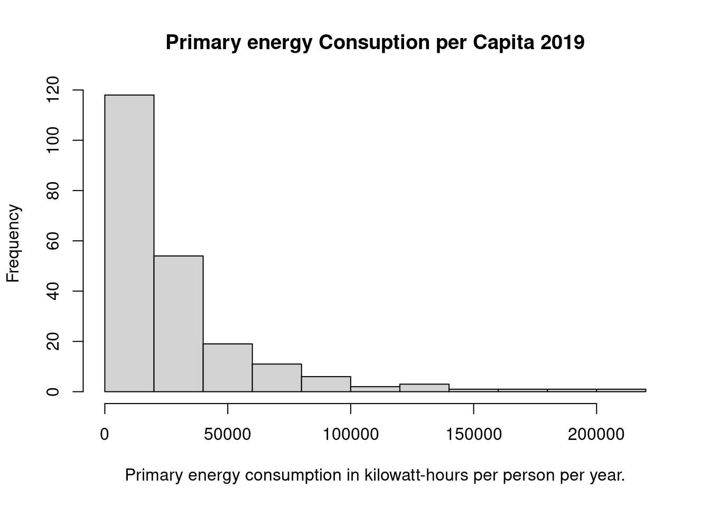
I have here used the xlaband mainarguments with a character value to have a nicer description of the histogram. Otherwise the x axis would have been labeled dat_countries$Cons and the title would have been Histogram of dat_countries$Cons. Note that we have here a histogram in the absolute frequency scale.
3.3 The average and the standard deviation
With a histogram we can summarize a large amount of data and get some insights about the variation in the data. Often we can summarize data much more drastically by just one number describing the center of the histogram and the spread around this center. When I write center an spread here, these are just ordinary words with no special technical meaning.
When we do statistics we need precise definitions and we will study and learn these definitions in this section. The average is often used to find the center. Another measure to find the center is the median. The standard deviation measures spread around the average. The interquartile range is another measure of spreads.
Before we go into these definitions, let me show for a start two histograms, both have the same center, but the second one is more spread out, there are more observations farther away from the center.
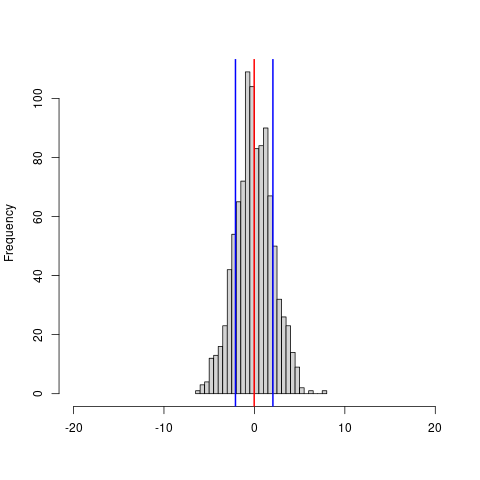
(a) Histogram 1
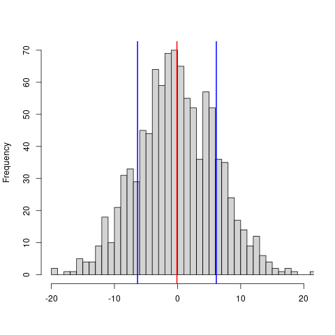
(b) Histogram 2
Figure 3.3: Histogram 1 and Histogram 2 have the same center but Histogram 2 is more spread out
These distributions can be summarized by the center and the spread. But what about a situation like this?
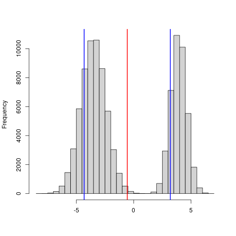
Figure 3.4: A bimodal distribution
In some cases such distribution can occur naturally. Think, for example, about the distribution of the elevation data of surface area of the earth. Most of the surface area of the earth is taken by the sea floor at about three miles below the sea level or the continental planes around sea level. If we would report only the center an the spread of this histogram, plotted in the picture as the red and blue vertical lines, we would miss these peaks.
3.3.1 The average
Human growth depends on good nutrition and the availability of medical services to effectively treat illness. Thus human height in a population has for a long time been a subject of study. The average human height in a population varies with the general living standards. In statistical terminology this is expressed by saying that human height and growth are positively correlated. This fact makes data on human height especially interesting for historians who study the history of living conditions. Because humans tend to get taller when they have good living conditions, human height can reveal some information on living conditions, height data can be an indirect measure of living conditions. This is especially interesting for periods when very little or no data were collected and recorded.
As we see from the class activity in the introductory unit where we collected data in your class on height and hand span, we learned that usually heights differ quite a bit within a group. This is also true in a population. The many different height data, which are usually collected in survey studies on health are usually summarized by studying average height. Height data are thus also interesting for us as one specific context to study height data.
Average
The average of a list of numbers is defined as their sum, divided by how many numbers their are in the list.
By now it will be no surprise for you that R provides a function for computing averages. This function is known by the alternative name for the average, called the mean.
Here is how you would compute the mean using R.
mean(L)
[1] 2.8
which is indeed what we should get as a result.
Let’s go back to the issue of human height data. Let us first look at a sample of height data and how they look like. This is a data set from the statistics Online Computational Resource (SOCR) of the university of California Los Angeles.9 for details.] The dataset contains 25,000 synthetic records of human heights and weights of 18 years old children.
9 See http://www.socr.ucla.edu/
Let us look at the histogram first. But before we do this, let me briefly explain a feature of R that will be very useful for us in the remainder of this course.
3.3.1.1 A brief digression: Installing and using R packages
When we install R we get a version the program which is called base-r. This is the term for the basic version, which comes with any R installation. The base version contains all the important functions. The hist()function is part of base-r for example, but also mean(), lenght() etc.
Base R can be extended by adding so called packages. A package contains additional functions for doing computations or other things like graphics with R written by other people or by yourself, once you have learned how to write a package. Packages have to be installed and then they need to be loaded to make the functions of the package available to R. You have to install a new package only once, but you have to load it in every new session of R if you want to use it.
The first package, you will encounter in this course is a package that I have prepared when preparing the course. It contains all the data sets we use here. When the package is loaded these data sets are available for use. The package that contains our data is called JWL. You need to install it first. As you might guess there is an R function to install packages. The function is called install.packages(). This function works if the package is beeing made available via the R CRAN-server at https://cran.r-project.org/. Our package is a package that I have assembled for this course and it was installed from a private archive. It is not on CRAN. For you taking this course the package is already installed.
To be able to make the funcions and the data contained in the package available to R you need to laod the package first. This is done with the function library(). Now assume we want to load the package JWL we need to type
library(JWL)
Now all the datasets bundled in the JWL-package are available for use to you. This includes the data sets on human height data I have prepared for this course.
The data set is called socr_height_weight and you can study the details and description of the data by typing ?socr_height_weight at the prompt.
Let us start by first saving the socr_height_weight data in an R object which we call - say - ´dat.
dat <- socr_height_weight
We can inspect the R object, using the R function str(). This function compactly displays the internal structure of an R object.
str(dat)
'data.frame': 25000 obs. of 3 variables:
$ Index : num 1 2 3 4 5 6 7 8 9 10 ...
$ Height: num 65.8 71.5 69.4 68.2 67.8 ...
$ Weight: num 113 136 153 142 144 ...
We see that dat is a data frame with three variables Index, Height and Weight. All variables are of type numeric.
From the help information on the dataset we know that the units of the Height variable is inches. Inches are used in the English speaking countries but in many other parts of the world the more common units are metric units. Human height in metric units would be measured in cm rather than in inches. This is an excellent opportunity to practice some of the R knowlegde you have learned in this unit.
Now you try
The variable Height in the dataframe dat is measured in inches. 1 inch is 2.54 cm. Transform the Height variable such that it shows the Height in cm rather than in inches,
Code
# the hight data are in inches and the weight data are in pounds. Convert to metric# units cmdat$Height <- dat$Height*2.54
Once you have done this little transformation of units, let us plot a histogram first. Let us also lable the x-axes as “Height in cm” and write as a title of the histogram “Height of 18 year old humans”
Now you try
Use R to plot a histogram of the Height variabe in the dat dataframe. Label the x-axes as “Height in cm” and write as a title of the histogram “Height of 18 year old humans”
Code
hist(dat$Height, xlab ="Height in cm", main ="Height of 18 year old humans")
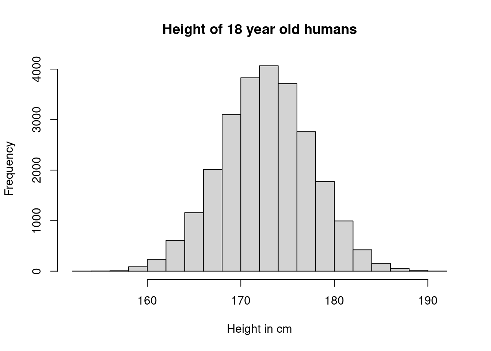
The distribution looks symmetric. If we summarize these data by taking an average in one number we will capture the center of the distribution fairly well. Let us compute the average, using the mean funcion.
Now you try
Use R to compute the average or mean of the Height variable in the dat dataframe.
Code
mean(dat$Height)
[1] 172.7025
The average height in this dataset is about 173 cm. The average is a very powerful way of communicating data by compressing many observations - in this example 25000 - into ons single number, the mean.
This compression is, however, only achieved by loosing some information on individual differences. For example in our dataset the average height is 173 cm. But there are about 4 % who are larger than 180.9 and there are also about 4 % who are smaller than 164.2. With 25000 individuals these are 1000 individuals who are beyond these thresholds. This diversity is hidden in the aggregation.
This is a good opportunity to show you a cool feature or trick in R how we could in one line compute such percentages. Assume we want to compute the percentage of individuals in our data who are larger than the mean of 172.7025. How can we do this?
Logicals are a powerful data type to make such a computation. Say we have 10 numbers, given by
x <-c(4,5,1,2,4,2,0,10,11,6)
Now we could ask R which entries of x are larger than 2 by typing
The output is a vector of logicals where R compares each entry in xwith 2 and if it is larger it returns TRUE and otherwise FALSE (this includes all entries which are exactly 2).
Now you try
Replace every TRUE value with 1 and every FALSE value with 0 and compute the mean. What do you get? Compute the percentage of values in xwhich are larger than 2. What did you get? Explain!
Note that, when you apply the function mean() to a vector of data of type logical the coercion rules of R will coerce TRUE to 1 and FALSE to 0 automatically. So if you apply mean() to x you will get the result you have computed before.
This insight can be used to compute the percentage of values that fulfill a certain condition in R. Here the condition is that the Height is larger than the mean.
Now you try
Compute the percentage of Heights in dat which are larger and the percentage of Heights that are smaller than the mean of 172.7025.
Code
mean(dat$Height >172.7025)
[1] 0.5006
Code
mean(dat$Height <172.7025)
[1] 0.4994
The value of a distribution where 50 % of all values are larger than this given value and 50 % are smaller is another one number summary you can give for a large set of data which describes the center of a distribution in another way. It is called the median. R also has a built in function for the median, which is called - as you might already guess - median(). Let us compute the median height in our data.
median(dat$Height)
[1] 172.7091
In this case the median and the mean give the same value up to the third digit. They are for practical reasons identical. The reason is that in the case of the measure of Height the distribution is highly symmetric. In practice you will encounter many situations where the distribution of a variable is not even approximately symmetric.
A typical case of a distribution that us typically not symmetric but skewed - as it is called in statistical terminology - is income. The following histogram which is scaled in relative frequencies shows the data for the global income distribution in the year 2013 as reported by two economists Hellebrand and Mauro (2015) from the Peterson Institute, a US based research institution.10 The unit of measurement is US dollars in so called purchasing power parity, a concept economists use to make income figures comparable in terms of the amount of goods they can buy.11
10 We have used the data they provide to simulate a sample of 100.000 observations consisten with the numbers they report. Thus our data used here are a simulation reproducing the characteristics of the data reported in this paper. We will soon learn how to do simulations using R. For the moment we need you to trust that we have done this correctly.
11 When reporting income figures we could translate all national figures gathered from around the world into one common currency (for instance, US dollars) using exchange rates from currency markets. But because market exchange rates do not always reflect the different price levels between countries, economists often opt for a different alternative. They create a hypothetical currency, called ‘international dollars’, and use this as a common unit of measure. The idea is that a given amount of international dollars should buy roughly the same amount – and quality – of goods and services in any country. This way of measuring monetary amounts is called dollars in purchasing power parity or PPP.
Code
library(readxl)aux <-read_excel("~/R/Statistics_JWL/data/income/wp15-7.xlsx", sheet =5, range ="B1:D1401")inc <- aux[-1 ,c(1,3)]names(inc) <-c("Income", "Percent")inc$Income <-as.numeric(unlist(inc$Income))inc$Percent <-as.numeric(unlist(inc$Percent))inc_trunc <- inc$Income[inc$Income<=14000]data <-sample(inc_trunc, 10^5, replace =TRUE, prob = inc$Percent[0:701])hist(data, breaks =27, xlab ="Income in purchasing parity power dollars", main ="Global income distribution")
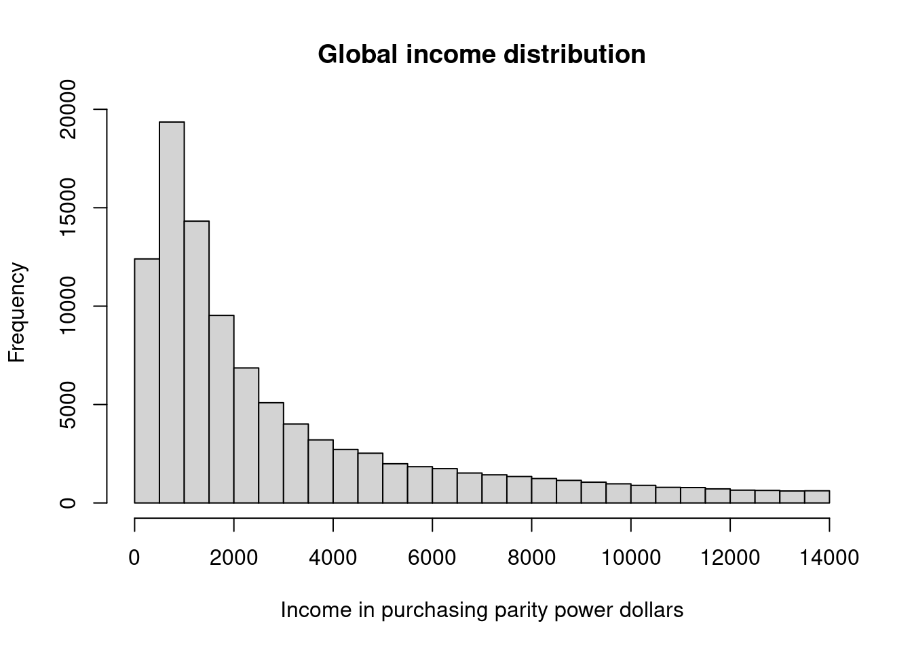
Now the mean and the median of these data would give us:
Code
mean(data)
[1] 3012.174
Code
median(data)
[1] 1700
There is a big difference in both numbers as you can see even better when we show the mean (red line) and the median (blue) income value of our data in the graph.
Code
hist(data, breaks =27, xlab ="Income in purchasing parity power dollars", main ="Global income distribution")abline(v =mean(data), # Add red line for meancol ="red")abline(v =median(data), # Add blue line for mediancol ="blue")
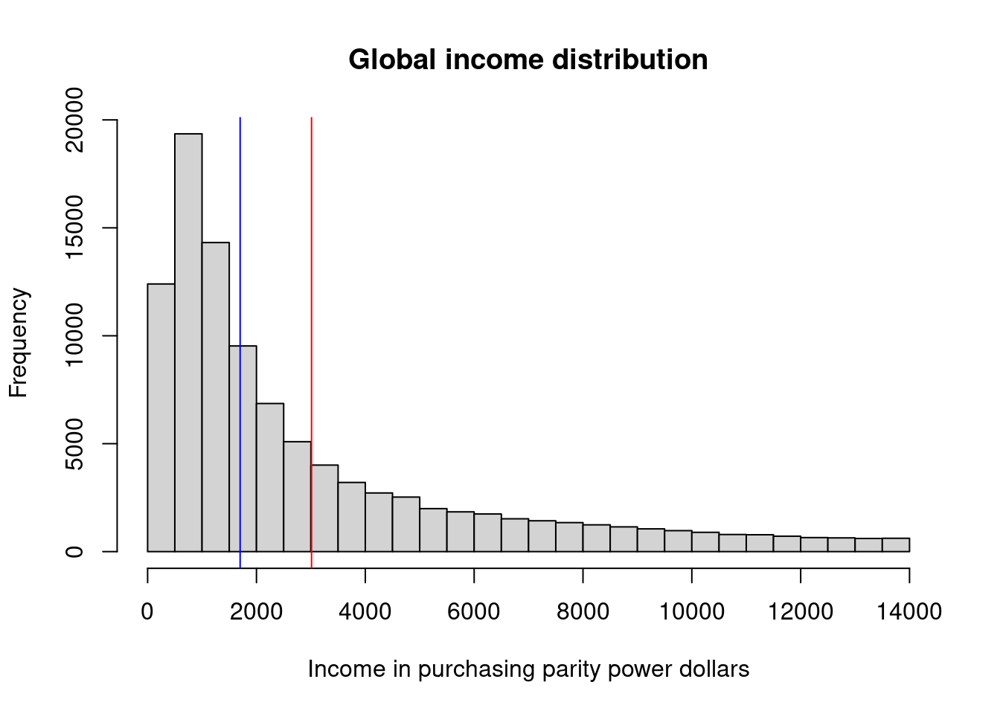
When the distribution is not symmetric the mean does not capture the center of the distribution well. We have stored the data of our histogram in an object we have chosen to call data. Let us verify that the median is actually the value above that is in the middle of all values and compare this with the mean for these skewed distribution.
Let’s check the median first
mean(data >1700)
[1] 0.49616
mean(data <1700)
[1] 0.49998
Now let us do the same check for the mean
mean(data >3012.174)
[1] 0.32447
mean(data <3012.174)
[1] 0.67553
You see that the mean now does not capture the center of the distribution well. Only 32 % have incomes above the mean income and 68 % have incomes below. The point where 50% are above and 50 % are below is actually at 1700, as expressed by the median.
There is another important difference between the mean and the median. Let us illustrate this difference with the example of primary energy consumption across the countries in the world. This distribution turned out to be highly skewed. Remember the histogram
Code
hist(dat_countries$Cons, xlab ="Primary energy consumption in kilowatt-hours per person per year.",main ="Primary energy Consuption per Capita 2019")
The mean is:
Code
mean(dat_countries$Cons)
[1] 26767.75
and the median is
Code
median(dat_countries$Cons)
[1] 16525.11
Now let us assume we add a fictitious large value to the data set, say 400.000 kwh per person per year and recalculate the mean.
mean(c(dat_countries$Cons, 400000))
[1] 28479.82
Now the mean per capita consumption is quite a bit larger actually - just from this one extreme observation - it is larger by more than 6 %.
What happens to the median?
median(c(dat_countries$Cons, 400000))
[1] 16525.53
It stays about the same.
The take away here is that the mean is a summary measure that is sensitive to outliers. The median on the other hand is a more robust measure. One or a a few outliers can not move the median.
3.3.2 Exercises for the Average
Exercise 1:
The number 3 and 5 are marked by crosses on the horizontal line below. Find the average of these two numbers and mark it by an arrow.
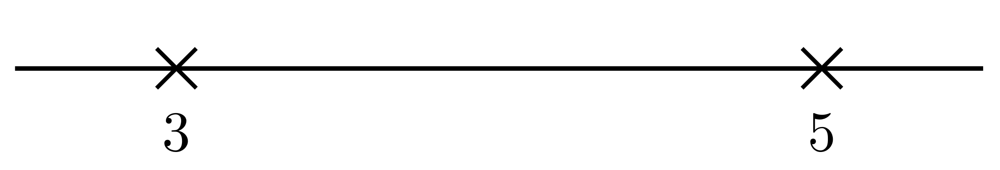
Repeat (a) for the list 3,5,5
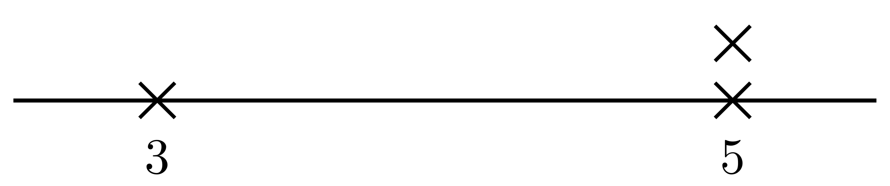
Two numbers are shown below by crosses on a horizontal axis. Draw an arrow pointing to their average.
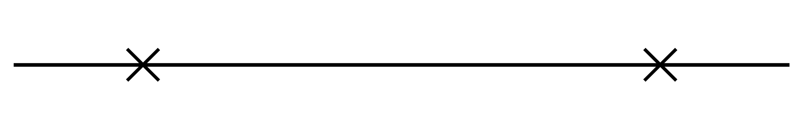
Exercise 2:
A list has 10 entries. Each entry is either 1, 2 or 3. What must the list be of the average is 1? if the average is 3? Can the average be 4?
Exercise 3:
Which of the following lists has a bigger average? Or are they the same? try to answer without doing arithmetic.
10, 7, 8, 3, 5, 9 (ii) 10, 7, 8, 3, 5, 9, 11
Exercise 4:
Ten people in a room have an average height of 1.69 m. An 11th person is 1.96 enters the room. Find the average height of all 11 people.
Exercise 5:
Twenty-one people in a room have an average height of 1.68. A 22nd person who is 1.96 enters the room. Find the average height of all 22 people. Compare with exercise 4.
Exercise 6:
Twenty-one people in a room have a height of 1.68. A 22nd person enters the room. How tall would he have to be to raise the average height by 1 inch.
Exercise 7:
If you go back to figure Figure 3.4, where in the Histogram would be mountains? Where would you find planes? Where would the trenches in the sea floor show?
Exercise 8:
Diastolic blood pressure is considered a better indicator of heart trouble than systolic pressure. The figure below shows age-specific average diastolic blood pressure for men age 20 and over in a health survey from the US (HANES5 (2003-04)). True or fales: The data show that as men age, their diastolic blood pressure increases until age 45 or so. and then decreases. If false, how do you explain the pattern in the graph? (Blood pressure is measured in “mm” that is millimeter of mercury)
Exercise 9:
Average hourly earnings in the US are computed each month by the Bureau fo Labor statistics using payroll data from commercial establishments. The Bureau figures the total wages paid out to non-supervisory personnel, and divides by the total hours worked. During recessions, average hourly earnings typically go up. When the recession ends, average hourly earnings often start going down. How can this be?
3.3.3 The standard deviation
When summarizing and communicating lots of data, it is useful not only to report at which value the center of the distribution is. It is often helpful to also think about the way how the values spread around the average. The quantity which measures this spread is called the standard deviation. It can be interpreted as an average deviation. In this section you will learn to interpret the standard deviation in the context of real data and then learn how it is computed both by hand and by using the computer.
Le us go back to our data on the height of 18 year old humans. There were 25.000 observations in our sample. The average height was
Code
mean(dat$Height)
[1] 172.7025
This average tells us that most of the humans measured in the sample had a height of around 1 m and 73 cm. But there were deviations from this average. Some humans were taller and others were smaller. We can ask how big these deviations are? In answering this question we need the concept of the standard deviation.
Standard deviation
The standard deviation says how far away numbers on a list are from their average. Most entries on the list will usually be somewhat around one standard deviation from the average. Very few will be more than two or three standard deviations away.
In R you can compute the standard deviation by using the function sd(). So let us compute the standard deviation of our height data using the sd()function.
sd(dat$Height)
[1] 4.830264
So the standard deviation is at about 4.8 cm. That means that many humans differed from the average height by about 1, 2, 3, 4 or about 5 cm. Let us use R to compute the percent of observation that are within one standard deviation from the average.
Let us use the trick of combining logical subsetting and the coercion rules of R to compute this percentage here:
aux <- dat$Height >=mean(dat$Height) -sd(dat$Height) & dat$Height <=mean(dat$Height) +sd(dat$Height)mean(aux)
[1] 0.68356
Let me explain what we have computed here. First we have checked for all the entries in the vector dat$Height whether they were larger than the average minus one standard deviation and smaller than the average plus one standard deviation. These are all the values that are within one standard deviation away from the average. For all values that are in this range R returns the value TRUE and for all the other values that are outside of this range, R returns the value FALSE. We have stored the vector recording all these logical values in a new object called aux. Now we computed the mean of aux. When the mean function of R gets a vector of logical values it coerces all the TRUE values to 1 and al the FALSE values to 0. When we take the mean we get the share of values for which the condition is TRUE. In our case this is around 68 %. The other 32 % are farther away.
Now you try
Compute the percentage of observations of our height data that are within two standard deviations from the average.
Compute the percentage of observations of our height data that are within three standard deviations from the average.
This is a rule of thumb that applies to many (but not all) data sets. For many distributions roughly 68 % of observations are within one standard deviation from the average. 95 % are within two standard deviations from the average and 99.7 % are within three standard deviations from the average. There is a deeper mathematical reason why this rule applies to many symmetric distributions. For the moment we can use this information as a sort of rile of thumb for symmetric, bell shaped distributions. We will learn later in the course where this rule comes from. Let us illustrate the rules graphically using the histogram.
Code
hist(dat$Height, col = color_list, xlab ="Height in cm", main ="Height of 18 year old humans")abline(v =mean(dat$Height), # Add red line for meancol ="red")
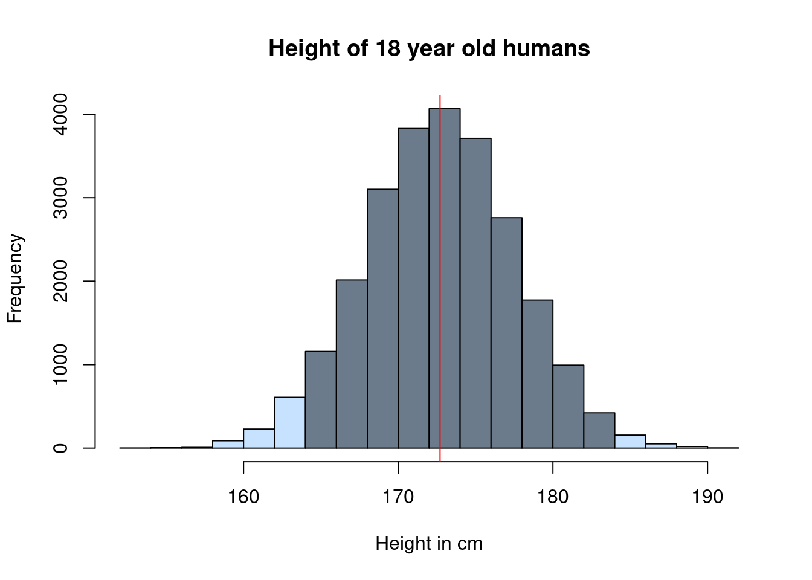
The next figure shows the same histogram. Now the area within two standard deviations from the mean is colored differently
Code
hist(dat$Height, col = color_list, xlab ="Height in cm", main ="Height of 18 year old humans")abline(v =mean(dat$Height), # Add red line for meancol ="red")
Let us note a final point about this rule of thumb for symmetric distribution, you frequently encounter in practice. Often it is common to report a distribution of a variable not in its orginal units - height in cm - for example but in a standardized form where the units are changed such that the mean is at 0 and the standard deviation is at 1.
How is this possible? Let us consider the following example.
Example
Consider the following 10 values, which we write into a vector \(x\) and compute its mean \(\mu\) and its standard deviation \(\sigma\):
x <-c(9,14,9,11,11,10,15,8,11,13)mean(x)
[1] 11.1
sd(x)
[1] 2.282786
Thus \(\mu = 11.1\) and \(\sigma = 2.282786\). Now let us change the units according to the formula \[\begin{equation*}
z_i = \frac{x_i - \mu}{\sigma}
\end{equation*}\] and compute the mean of \(z_i\) and its standard deviation. We can use R to do that:
z <- (x -mean(x))/sd(x)mean(z)
[1] 1.422473e-16
sd(z)
[1] 1
Now you see that the mean is 0 and the standard deviation is 1. The mean in the R computation is not exactly 0, but this comes from the rounding errors made by the computer. For practical purposed \(1.4 \times 10^{-16}\) is as good as zero. This must be the case as a consequence of how we changed the units. The mathematically inclined among you might try to derive this fact more generally using the definition of the mean and the standard deviation.
Now see what happens when we standardize our height data
So the rule of thumb applies all the same: About 65 % of observations are within one standard deviation from the mean, 95 % within 2 and 99.7 within three standard devaitions. The transformation has only changed the units in which we measure our values not the way they are distributed.
3.3.4 Exercises for the standard deviation
Exercise 1:
The socr_height_weight about the height and weight of 18 year old humans, we had used in the lecture before the average height in inches was about 173 cm and the standard deviation was about 5 cm.
One individual was 188 cm. He was above average by how many standard deviations?
Another individual was 174.66 cm. She was above average by how many standard deviations?
A third individual was 1.5 standard deviations below the average height. He was how many cm?
If an individual was within 2.25 standard deviations of average height, the shortest height for this individual would be how many cm? The highest height would be how many cm?
Exercise 2:
Here are the heights of 4 individuals. 150 cm, 130 cm, 180 cm, 172 cm. Match the heights with the description. A description may be used twice.
unusually short, about average, unusually tall
About what percentage of individuals in the data had heights between 170.2 and 173.2 ? Between 165.5 and 179.2?
Exercise 3:
Each of the following lists has an average of 50. For which one is the spread of the numbers around the average biggest? Smallest?
0, 20, 40, 50, 60, 80, 100
0, 48, 49, 50, 51, 52, 100
0,1,2,50,98, 99, 100
Exercise 4:
Each of the following lists has an average of 50. For each one, guess whether the standard deviation is around 1, 2, or 10. (This does not require any arithmetic.)
49, 51, 49, 51, 49, 51, 49, 51, 49, 51
48, 52, 48, 52, 48, 52, 48, 52, 48, 52
48, 51, 49, 52, 47, 52, 46, 51, 53, 51
54, 49, 46, 49, 51, 53, 50, 50, 49, 49
60, 36, 31, 50, 48, 50, 54, 56, 62, 53
Exercise 5:
Below are three sketches of three stylized histograms (we call them “sketches” because they display a schematic shape of a hypothetical histogram. This is why these sketches do not look like real histograms.) Match the sketch with the description. Some descriptions will be left over. Give your reasoning in each case. The symbol \(\approx\) is the mathematical notation for approximately.
One investigator takes a sample of 100 men age 18 - 24 in a certain town. Another one takes a sample of 1000 such men.
Which investigator will get a bigger average for the heights of the men in his sample? Or should the average be about the same?
Which investigator will get a bigger standard deviation for the heights of the men in his sample? or should the standard deviation be about the same for both investigators?
Which investigator is likely to get the tallest of the sample men? Or are the chances about the same for both investigators?
Which investigator is likely to get the shortest of the sample men? Or are the chances about the same for both investigators?
3.3.5 Computing the standard deviation
Usually we will compute the standard deviation using the computer and only in rare cases will we ever compute a standard deviation by hand. Still it is important that you understand how the computation works and what is actually been computed. Here is how.
Example 1: Find the standard deviation of the list 20, 10, 15, 15
Step 1: We first need to find the average, which is \[\begin{equation}
\frac{20 + 10 + 15 + 15}{4} = 15
\end{equation}\]
Step 2: We next need to find the deviation from the average. In order to do so, we just subtract the average from each entry \[\begin{eqnarray}
(20-15)&=5\\
(10-15)&=&-5\\
(15-15)&=&0\\
(15-15)&=&0
\end{eqnarray}\]
Step 3: Now we have to square each one of these differences and take the square root, which is often called the root mean square
The standard deviation has the same units as the data. For example, when we measure height in cm then at the squaring step the units change to \(cm^2\) but the suqre root returns \(cm\) again.
Now you try
Guess which of the following two lists has the larger standard deviation. Check your guess by computing the standard deviation for both lists.
9,9,10,10,12
7,8,10,11,11,13
Can the standard deviation ever be negative?
For a list of positive numbers can the standard deviation ever be larger than the average?
3.3.6 Interquartile range and the boxplot
Note that for skewed distributions the standard deviation is also not a very good measure of the spread, because it measures the variation about the mean and the mean does not capture the center of the distribution very well in this case.
Moreover the standard deviation - like the mean - is sensitive to outliers and is therefore not a robust measure of the spread of a distribution.
A measure that is more appropriate in this case is the inter-quartile range or IQR. It is the distance between the 25th and the 75th percentile of the data and contains the central half of the data. The 25th percentile is the range of the data where 25 % of observations have a lower value and 75 have a higher one. The median, for example, could equivalently be termed the 50 % percentile.
R had a function to compute the inter-quartile range, which is called IQR(). For example in the case of our income data, which we showed are skewed, we would get, for example a mean and a standard deviation of
Code
mean(data)
[1] 3012.174
Code
sd(data)
[1] 3160.662
and a median and inter quartile range of
Code
median(data)
[1] 1700
Code
IQR(data)
[1] 3220
Alternatively you could use the R function summary(), which computes in one go the minimum and maximum value of your data, as well as the median the mean and the 25 and 75 percentile of the data. You can compute the IQR from this.
Let us illustrate the use of summary() with the income data discussed in this section. To compute the describtives in one go for these data, you would tell R:
summary(data)
Min. 1st Qu. Median Mean 3rd Qu. Max.
20 820 1700 3012 4040 14000
The summary()function will give you the minimium, the first quartile, the median and the mean, the 4th quartile and the maximum. The interquartile range can be computed from these data as \(4040 - 820\) which is equal to \(3220\). When you use IQR()you will get
IQR(data)
[1] 3220
as indeed it should be.
Note that is you summarize our human height data we get:
summary(dat$Height)
Min. 1st Qu. Median Mean 3rd Qu. Max.
153.1 169.4 172.7 172.7 176.0 190.9
Since the median and the mean give you the same value, you can see already from these data that the distribution of the data is symmetric, as we have already seen before.
Now you try
For the list of numbers:
2, -1, 1, -1, 1, -2, 1.5, -0.2, 1.37, -1.37, 3
Compute the mean, the standard deviation, the median and the inter quartile range.
Draw a histogram
A standard graphical tool that summarizes the data in an anology to the summary()function is the boxplot. The boxplot summarizes the variation of data graphically through quartiles. It draws a box, where one side corresponds to the lower quartile, while the opposie side corresponds to the upper quartile. The median is displayed as a line crossing the box. The boxplot also contains lines, which are called the whiskers extending the box indication variability outside the two quartiles. These observations are at the extremes of the variation of the data. Data points that differ significantly from the other data, often calles outliers are shown as individual points.
Let us show some of the datasets we have discussed in this section to illustrate this very useful tool which gives you a compact and very informative summary of a huge data set. Let us start with Nile river data we had looked at in the beginning of the section. T R function for making a boxplot is called boxplot() and is used like this:
boxplot(Nile)
Here the box shows you the maximum and the minimum flow (the whiskers), the box surrounding the first and the fourth quartile as well as the median as the black line within the box. If you look up the help function of boxplot() you can learn about various ways to control the look of the plot.
You can display the boxplot vertically or horizontally, whatever seems more convenient in the given context. Assume for instance we would like to show the Nile river data in one graph displaying both the boxplot and the histogram at the same time, then it would be more informative to have the boxplot as a horizontal graph.
Code
mat <-matrix(c(1, 2), nrow =2, ncol =1, byrow =TRUE) # first and second plotlayout(mat = mat, heights =c(1, 1)) # First and second row relative heightsboxplot(Nile, horizontal =TRUE)hist(Nile)
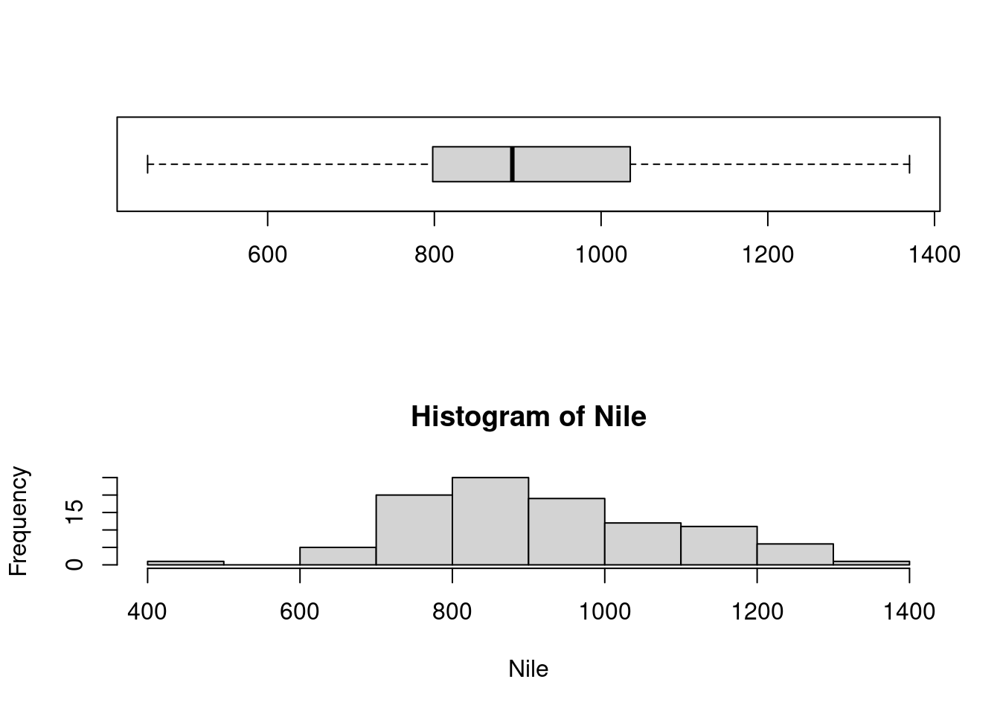
But you could, of course, also choose a different layout. Lets take the primary energy consumption data we used before
Code
mat <-matrix(c(2, 1), nrow =1, ncol =2, byrow =TRUE) # first and second plotlayout(mat = mat, widths =c(1, 2)) # First and second row relative heightsplot(hist_info, freq =FALSE, xlab ="", ylab ="Percent", main =" ")boxplot(hist_info$density)
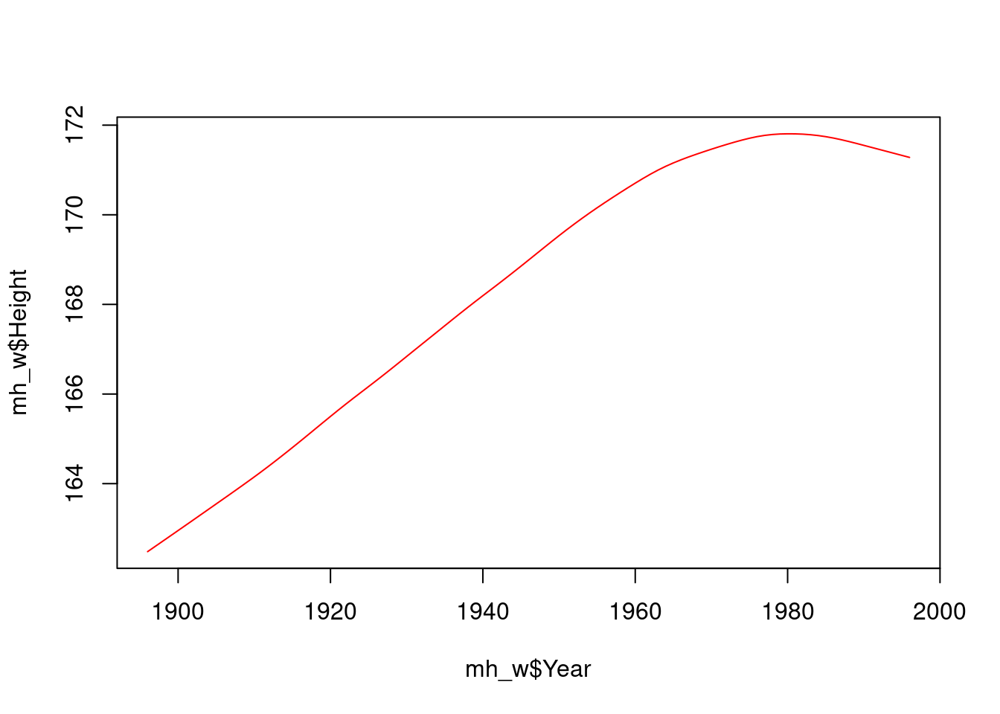
This graph show you in one picture the extreme asymmetry of primary energy consumption across the globe. Very few countries are heavy consumers of primary energy whereas the a huge share of countries consume very little in comparison. In the context of the debate on climate change, this observation might be an interesting starting point for discussing the sharing of the burdens of getting out of fossile fuels between the countries in the world.
Let us finally look at the Nile river data once more combining the display of the raw data, the histogram as well as the boxplot. This shows you at the same time the raw data, and two ways of summarizing them. When the datapoints are huge, the display of the raw data will not show you very much, because the points will be so packed that you can not distinguish different datapoints easily. Withe the Nile river flow data, where we have 100 observations the situation is different. So this is how the picture of all three graphs combined looks like.
Code
# Datalayout(matrix(c(2, 0, 1, 3),nrow =2, ncol =2,byrow =TRUE),widths =c(3, 1),heights =c(1, 3), respect =TRUE)# Top and right margin of the main plotpar(mar =c(5.1, 4.1, 0, 0))plot(as.numeric(Nile), xlab ="", ylab ="Flow")# Left margin of the histogrampar(mar =c(0, 4.1, 0, 0))hist(Nile, main ="", bty ="n",axes =FALSE, ylab ="")# Bottom margin of the boxplotpar(mar =c(5.1, 0, 0, 0))# Boxplot without plot region boxpar(bty ="n")# Boxplot without axesboxplot(Nile, axes =FALSE)
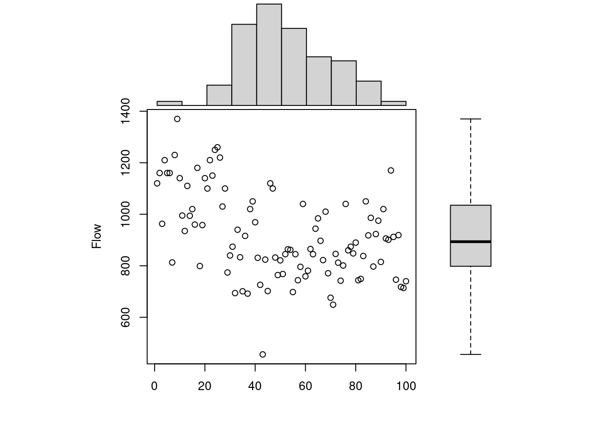
3.4 Describing differences between groups of numbers
Groups of numbers are often compared by using summary statistics. Summary statistics can answer the question: How do the groups differ on average, how do they differ with respect to how spread out the observations are.
By this stage of the chapter on summarizing and communicating lost of data it should be clear that when we conduct such comparisons, we have to be mindful of the fact that summary measures hide information that depending on the way the data are distributed some summary measures are more appropriate than others.
Let us use data on human height to illustrate these points. Our data includes a set of anthropometric data from a textbook by the anthropologist Richard McElrath (McElrath (2020)). If we summarize the height data of men and women in this dataset using the R summary function we get
$Male
Min. 1st Qu. Median Mean 3rd Qu. Max.
139.7 157.5 160.7 160.4 163.8 179.1
$Female
Min. 1st Qu. Median Mean 3rd Qu. Max.
136.5 146.1 149.9 149.5 153.0 162.6
The summary statistics shows as a few facts about these data. First of all we see that both for the male height data as well as for the female height data the mean and the median are about the same and thus the distributions are roughly symmetric. The mean thus actually captures the “center” of the distribution in a meaningful way. On average men are taller than women. The variation in terms of the inter quartile range is about the same between 6 and 7 cm.
Note that this does not mean that all men are taller than women. Let’s look at the full data in terms of the histogram.
Code
hist(mh, col=rgb(1,0,0,.5), border=NA, xlab ="Height in cm", main ="Comparative histogram male and female height", breaks =14)hist(fh, col=rgb(0,0,1,.5), border=NA, breaks =9, add=TRUE)
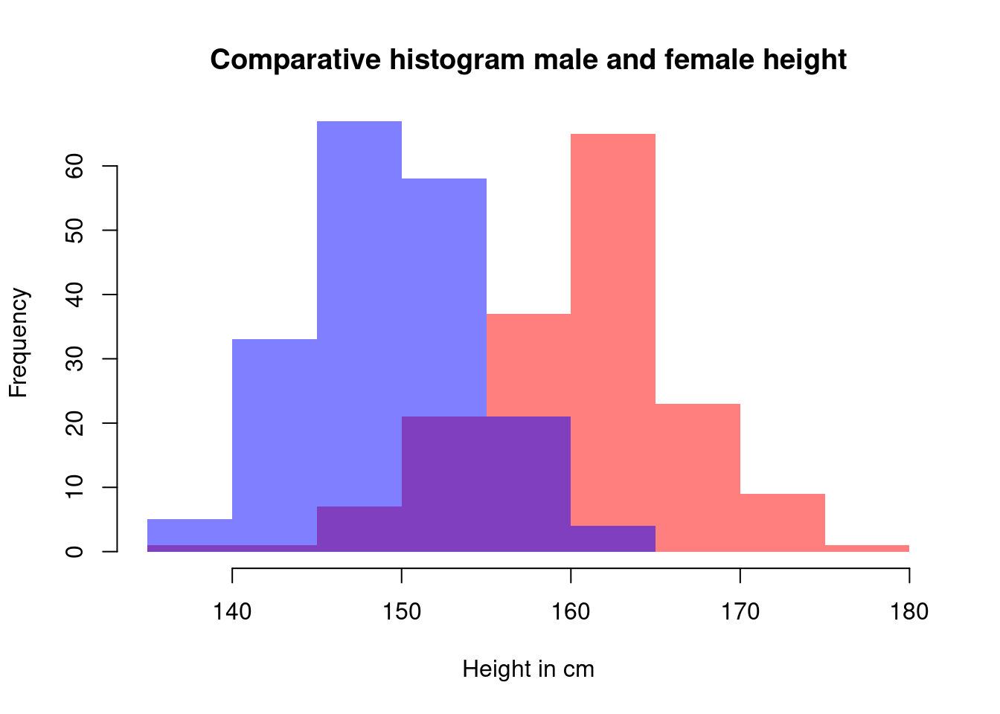
We have colored the female height distribution in blue and the male height distribution in red and overlayed the histograms. Now you can see that men tend to be taller than women as expressed in the differences in the averages there is also a substantial amount of overlap in the distributions. For each male in this overlap region you will find a female with a matching height, and some who are taller than a given male individual. About 10 % of women in this dataset have a male twin in height.
If you describe data and compare them by summary measures there is no substitute for looking at the data properly. It is usually a good idea to look at the distribution as well as on the summary measures.
3.5 Describing Relationships between data
Are taller people also heavier? This is another way in which we can look at large sets of data and describe their pattern. We try to describe the relationship between data. A standard tool to do so is the so called scatterplot.
Let us show how a scatterplot works by using the data on height and weight of humans older than 18 years. If you give two numeric vectors of equal length to the function plot() in R R will produce a scatterplot.
Code
H <- socr_height_weight$Height*2.54W <- socr_height_weight$Weight*0.4535924plot(H,W, xlab ="Height in cm", ylab ="Weight in kg", main ="Relation between height and weight of adult humans")
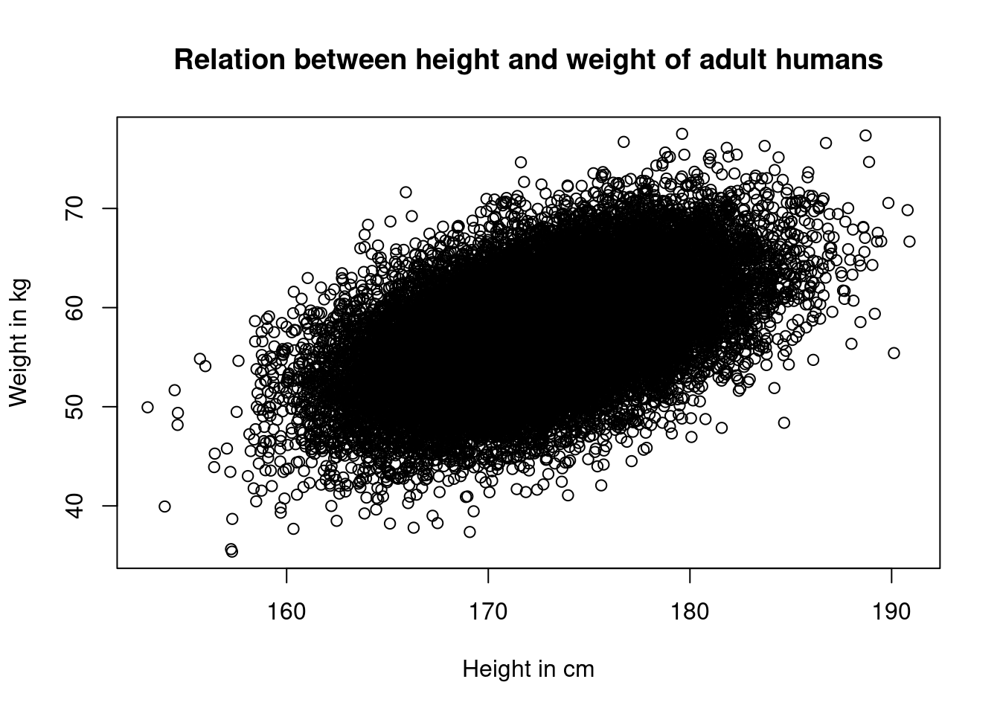
What you see here is a dense cloud of 25.000 pairs of height and weight measurements. For any given height you see a whole range of observations with different weights. And for any given weight you see many observations with differing heights. But the cloud as a whole shows an increasing relation. This makes also intuitive sense. People who are taller tend to be also heavier.
It is sometimes convenient to summarize such increasing (or decreasing) relationships between two variables or the pairs of numbers shown in a scatterplot with a single number. The general choice for doing this is the Pearson correlation coefficient or simply the correlation.
The Pearson correlation coefficient is a number that can be between -1 and 1. It epresses how close to a straight line the data-points in the scatterplot fall. If the correlation coerfficient is 1 all points lie on an upward sloping straight line. If the coeficcient is - 1 all the points fall on a downward sloping straight line. A correlation coefficient of 0 can come from points scattered at random or any other pattern in which there is no systematic upward or downward trend.
R provides a function for the Pearson correlation coefficient, which is called cor(). For our height-weight pairs data used for the scatterplot this coefficient computes as
cor(H,W)
[1] 0.5028585
suggesting an association of increasing weight with increasing height.
A correlation coefficient is simply a one number summary of association or co-variation. It can not be used to conclude that there is definitely an underlying relationship between height and weight - in this example - nor can it say anything about why such a relationship may exist.
3.6 Describing Trends
Let us come back to the data on human height. One reason why data on height have always been interesting to researchers is that average height is strongly correlated with living standards in a population. This is because poor nutrition and poor medical support limit human growth. Because better living conditions tend to make humans taller they are an indirect measure of living stanrdards. Height is - of course - not a direct measure of well beeing. The variation of height in a given population is largely determined by genetic fatcors.
Looking at the trend of average height over time helps us to indirectly track progress especially with respect to conditions of nutrition and disease prevention. The time trends in average human height are therefore data that can tell interesting stories or open our interest for further exploration.
Let us use a dataset on the average height of men and women accross countries around the world from 1896 to 1996 which we retrieve from the site our world in data which we have now encountered several times by now12.
12 https://ourworldindata.org/human-height
Let us study, for instance the data for the world as a whole
Code
mh <- height_menfh <- height_womenmh_w <- height_men[height_men$Entity =="World", ]fh_w <- height_women[height_women$Entity =="World", ]x <- mh_w$Yeary1 <- mh_w$Heighty2 <- fh_w$Height#plot the first data series using plot()plot(x, y1, type="l", col="blue", ylab="y", lty=1, ylim=range( c(150, 180) ) )#add second data series to the same chart using points() and lines()lines(x, y2, type ="l", col="red",lty=2)
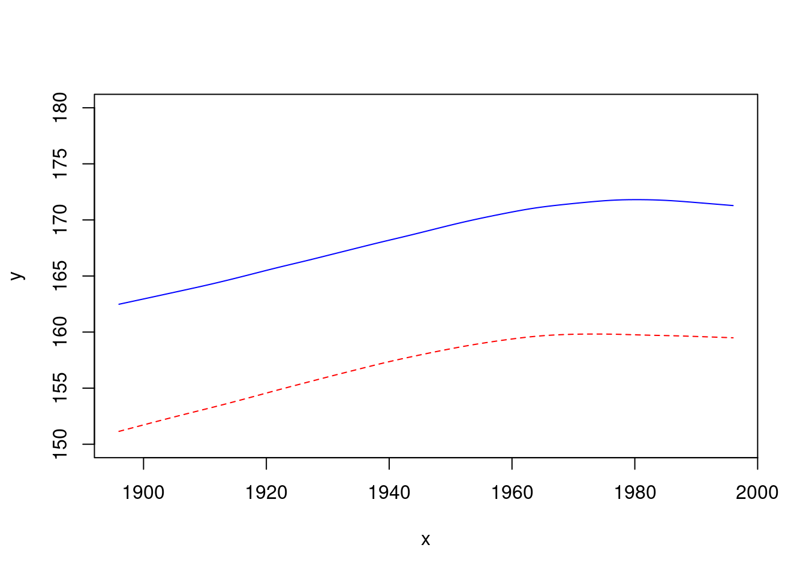
3.7 Summary
3.8 Computer exercises
Open the notebook exercises_summarizing_and_communicating_lots_of_data.ipynb and work on the exercises. Write your solutions into the notebook. You will need the computer to do this work.


 2. Three people plot histograms for the weights of subjects in a study, using the relative frequency scale. Only one is right. Which one and why?
2. Three people plot histograms for the weights of subjects in a study, using the relative frequency scale. Only one is right. Which one and why?